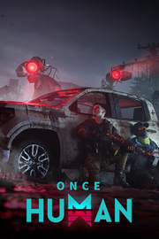

Once Human
Detalles
|  | |
| Tiempo de juego | No Jugado |
| Última actividad | Nunca |
| Añadido | 1/29/2025 14:44:06 |
| Modificado | 1/29/2025 14:48:27 |
| Estado de finalización | No Jugado |
| Librería | Playnite |
| Fuente | FREE TO PLAY |
| Plataforma | PC (Windows) |
| Fecha de lanzamiento | 7/9/2024 |
| Puntuación de la Comunidad | 73 |
| Puntuación de la Crítica | |
| Puntuación de usuario | |
| Género | Acción Aventura Estrategia Free to Play Rol Simuladores |
| Desarrollador | Starry Studio |
| Editor | Starry Studio |
| Característica | Compat. Total Con Mando Compras Dentro De La Aplicación Cooperativo Cooperativo En Línea Cromos De Jcj Jcj En Línea Multijugador Multijugador Masivo |
| Enlaces | Punto de encuentro Discusiones Guías Noticias Página de la tienda PCGamingWiki |
| Tag | 3D Acción Aventura Construcción de bases Cooperativos Cooperativos en línea Disparos Estrategia Free to Play MMORPG Multijugador Mundo abierto Personalización de personajes Posapocalípticos Rol estratégico Simulación Supervivencia Supervivencia en mundo abierto Terror Un jugador |
Descripción
【Visional Wheel: Lunar Oracle】
Once Human has recently updated with a new season label system called "Visional Wheel: Lunar Oracle." In this post-apocalyptic world, your sanity will rapidly decline, and survival comes with high risks and high rewards. Under the ominous bloody moon, let’s go crazy together！
Survive in the wilderness
You wake up in the middle of nowhere. You'll have to brace yourself for the cruelty of nature (from monsters to lack of food); however, Stardust's influence does not restrict to living things, it also affects the soil and water. Eating polluted food and drinking dirty water will reduce your Sanity. When your Sanity drops, your max HP would drop accordingly. To eat or not to eat, it's a question.

Fight against monsters
Battle numerous enemies that are once human, and challenge bosses from another dimension to gain powerful items and ease Stardust pollution. You are not only fighting for yourself, but also fighting for the survivors.

Customize weapons
With about 100 gun blueprints divided into seven categories for you to collect and craft, every loot grants you something new. Did I mention accessories and gun perks? Right, they are the heroes here. If our current weapon cannot satisfy your need, you can add different parts and perks, upgrade your firearm to your heart's content.

Build territory
Use Territory Core to build a house of your own. You can keep a practical style, jamming everything needed in a small room; or you can design a townhouse with a patio, kitchen, garage… The best part is, you can relocate your territory any time you want!

Find out the truth
Delve into the truth of Stardust, find out where it came from, and what it wants. In the journey of seeking truth, you may feel alone, but you are never alone. There are several factions in the world, some can be violent and hostile, others might be friendly and helpful. Explore human settlements to learn their stories or exterminate bosses without leaving a name for survivors to praise, the choices are yours.